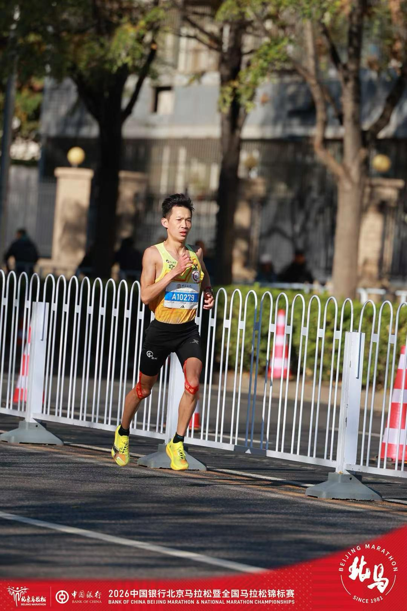

YOU 跑友档案 / 路跑 · 越野跑
唐少平
唐少 · 抬腿五公里
唐少平在北京马拉松刷新个人最好成绩，也在珠海凤凰山和贺州姑婆山的越野赛站上领奖台。
2:27:512026 北京马拉松 · 全马 PB · 净计时

2026 年 10 月 18 日北马净计时 2:27:51，快于当年男子全马一级时间线 2:31:10 共 3 分 19 秒。2024 年南昌马拉松净计时 2:32:25，仍列在历年赛果中。
YOU 跑友档案 / 路跑 · 越野跑
唐少 · 抬腿五公里
唐少平在北京马拉松刷新个人最好成绩，也在珠海凤凰山和贺州姑婆山的越野赛站上领奖台。

2026 年 10 月 18 日北马净计时 2:27:51，快于当年男子全马一级时间线 2:31:10 共 3 分 19 秒。2024 年南昌马拉松净计时 2:32:25，仍列在历年赛果中。